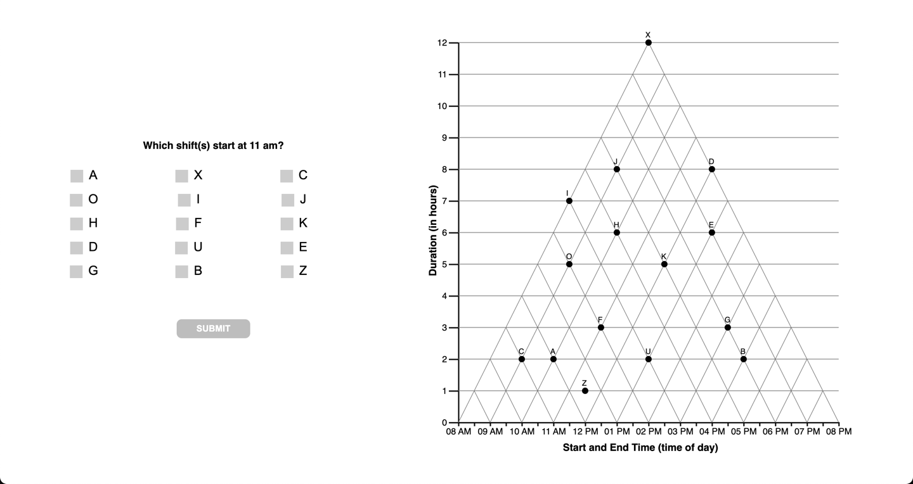

In Study 3A we explore a hypothesis that emerged from analysis of Study 2, namely that presenting a learning with a situation that induces a state of impasse will increase the probability that learners experience a moment of insight, and in turn restructure their interpretation of the coordinate system.
In the context of Study 2, an impasse state was (unintentionally) induced when the combination of question + data set yielded no available answer in the incorrect (cartesian) interpretation of the graph. In Study 3A, we test this hypothesis by comparing performance between a (treatment) group receiving impasse-inducing questions followed by normal questions, and a non-impasse control.
H1. Learners posed with impasse-inducing questions will be more likely to correct interpret the graph.
H0. Learners posed with impasse-inducing questions will be no more likely to correctly interpret the graph.
METHODS
Design
We employed a mixed design with 1 between-subjects factor with 2 levels (Scaffold: control, impasse) and 15 items (within-subjects factor).
Independent Variables:
B-S (Scaffold: control,impasse)
W-S (Item x 15)
Dependent Variables:
Response Latency : Time from stimulus onset to clicking ‘Submit’ button: time in (s)
Response Accuracy : Is the response triangular-correct?
(derived) Interpretation : With which interpretation of the graph is the subject’s response on an individual question consistent?
Materials
Stimuli consisted of a series of 15 graph comprehension questions, each testing a different combination of time interval relations, to be read from a Triangular-Model graph. Figure 2. The list of questions can be found here.

Figure 2: Sample Question (Q=1) for Graph Comprehension Task
Note that across both control and impasse conditions, both the question, response options and graph structure were identical. The experimental manipulation (posing a mental impasse) was accomplished by changing the position of datapoints in the impasse-condition graph, such that for any given question, there was no available response option if the reader were to interpret the graph as cartesian (making an orthogonal rather than diagonal projection from the x-axis.)
The green line indicates the ideal-scanpath to the correct (triangular) answer to the first question, and the red line indicates the (incorrect) orthogonal interpretation. In the IMPASSE figure (at right), there are no data points that intersect the red line.
Figure 3: Sample Question (Q=1) graphs for each condition
Procedure
Participants completed the study via a web-browser. Upon starting, they submitted informed consent, before reading task instructions. Participants were introduced to a scenario in which they were to play the role of a project manager, scheduling shifts for a group of employees. The schedule of the employees was presented in a TriangularModel (TM) graph, and they would be answering question about the schedule. Then participants completed a test block of 15 items. In the IMPASSE condition, the first five questions included an IMPASSE problem state. For participants in the CONTROL condition, the dataset was structure such that there was always an available ‘orthogonal answer’ for the first 5 questions. In both conditions, the remaining 10 questions were not structured as impasse. Following the test block, participants answered a free-response question about their strategy for reading the graph, followed by a demographic questionnaire and debrief.
Sample
Data was collected by convenience sample of a university subject pool. Initial data (Fall 2017, Spring 2018) were collected in-person, with large groups of students simultaneously completing the study (independently) in a computer lab. In Fall 2021 and Winter 2022 we collected additional data to replicate results in a remote format (students completing the study asynchronously on their own computers).
ANALYSIS
Data Preparation
Before our data can be analyzed, data files from individual data collection periods must be harmonized into a common data format (Section 1).
Response Scoring
Because the graph comprehension task utilizes a Multiple-Response (MR) format (rather than simple multiple choice), the raw response data (the combination of answer options selected) for each question first need to be assigned a score. Approaches to scoring MR data and score transformations are derived in Section 2.
Hypothesis Testing
TODO
Source Code
---title: "SGC3A"subtitle: "Study SGC3A | The Insight Hypothesis"---```{r}#| label: SETUP#| echo : true#| warning: false#| message : false#IMPORT LIBRARIESlibrary(tidyverse) #ALL THE THINGS#visualizationlibrary(ggdist) #distribution visualizationslibrary(ggpubr) #arrange plots# library(rmdformats)library(tables) #tables, begrudingly# library(pastecs) #stat.desclibrary(mosaic) #simple descriptives [favstats]library(ggplot2) #graphs#library(rstatix) #nice effsizes https://rpkgs.datanovia.com/rstatix/index.htmllibrary(effectsize) #effect size# library(fitdistrplus) #fitting theoretical distributionslibrary(see) #pubready plots, esp. violin# library(pwr) #power analysis```\newpage## INTRODUCTION {.unnumbered}**THIS NOTEBOOK IS INCOMPLETE**In Study 3A we explore a hypothesis that emerged from analysis of Study 2, namely that **presenting a learning with a situation that induces a state of impasse will increase the probability that learners experience a moment of insight, and in turn restructure their interpretation of the coordinate system.**In the context of Study 2, an impasse state was (unintentionally) induced when the combination of question + data set yielded no available answer in the incorrect (cartesian) interpretation of the graph. In Study 3A, we test this hypothesis by comparing performance between a (treatment) group receiving impasse-inducing questions followed by normal questions, and a non-impasse control.::: {#fig-manipulation layout-ncol="2"}{#fig-control}{#fig-impasse}Posing a mental impasse:::**To try the study yourself:**- [control condition](https://limitless-plains-85018.herokuapp.com/?study=SGC3A&condition=111&session=WEB-DEMO)- [impasse condition](https://limitless-plains-85018.herokuapp.com/?study=SGC3A&condition=121&session=WEB-DEMO)### HypothesesH1. Learners posed with impasse-inducing questions will be *more likely* to correct interpret the graph.\\H0. Learners posed with impasse-inducing questions will be *no more likely* to correctly interpret the graph.## METHODS### DesignWe employed a mixed design with 1 between-subjects factor with 2 levels (Scaffold: control, impasse) and 15 items (within-subjects factor).Independent Variables:- B-S (Scaffold: control,impasse)- W-S (Item x 15)Dependent Variables:- Response Latency : Time from stimulus onset to clicking 'Submit' button: time in (s)- Response Accuracy : Is the response triangular-correct?- (derived) Interpretation : With which interpretation of the graph is the subject's response on an individual question consistent?### MaterialsStimuli consisted of a series of 15 graph comprehension questions, each testing a different combination of time interval relations, to be read from a Triangular-Model graph. @fig-sample. The list of questions can be found [here](static/stimuli/sgcx_questions.csv).{#fig-sample fig-alt="picture of multiple select question on the left, accompanied by a triangular model graph on the right" fig-align="center"}Note that across both control and impasse conditions, both the question, response options and graph structure were identical. The experimental manipulation (posing a mental impasse) was accomplished by changing the position of datapoints in the impasse-condition graph, such that for any given question, there was no available response option if the reader were to interpret the graph as cartesian (making an orthogonal rather than diagonal projection from the x-axis.)*The green line indicates the ideal-scanpath to the correct (triangular) answer to the first question, and the red line indicates the (incorrect) orthogonal interpretation. In the IMPASSE figure (at right), there are no data points that intersect the red line.*{#fig-conditions fig-alt="a triangle graph at left shows the correct (diagonal) path from the x-axis to the correct answer(datapoint f) in green, and an incorrect orthogonal projection from the x-axis to incorrect datapoint A. At right, the same graph is depicted, but datapoint A no longer intersects the orthogonal projection from the xaxis."}### ProcedureParticipants completed the study via a web-browser. Upon starting, they submitted informed consent, before reading task instructions. Participants were introduced to a scenario in which they were to play the role of a project manager, scheduling shifts for a group of employees. The schedule of the employees was presented in a TriangularModel (TM) graph, and they would be answering question about the schedule. Then participants completed a test block of 15 items. In the IMPASSE condition, the first five questions included an IMPASSE problem state. For participants in the CONTROL condition, the dataset was structure such that there was always an available 'orthogonal answer' for the first 5 questions. In both conditions, the remaining 10 questions were not structured as impasse. Following the test block, participants answered a free-response question about their strategy for reading the graph, followed by a demographic questionnaire and debrief.### SampleData was collected by convenience sample of a university subject pool. Initial data (Fall 2017, Spring 2018) were collected in-person, with large groups of students simultaneously completing the study (independently) in a computer lab. In Fall 2021 and Winter 2022 we collected additional data to replicate results in a remote format (students completing the study asynchronously on their own computers).## ANALYSIS### Data PreparationBefore our data can be analyzed, data files from individual data collection periods must be harmonized into a common data format ([Section -@sec-SGC3A-harmonize]).### Response ScoringBecause the graph comprehension task utilizes a Multiple-Response (MR) format (rather than simple multiple choice), the raw response data (the combination of answer options selected) for each question first need to be assigned a score. Approaches to scoring MR data and score transformations are derived in [Section -@sec-SGC3A-scoring]. ### Hypothesis Testing **TODO**